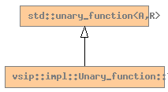

Global Namespace
Inheritance Tree
Inheritance Graph
Name Index
template <
typename
A>
struct
vsip
::
impl
::
Unary_function
::Type
File:
../../../vsip/core/fns_userelt.hpp

-
Public Member functions
static
const char*
name
()
constructor
Type
(F
f
)
R
operator()
(A
a
)
const
-
Public Data members
F
function_
Generated on Sat Apr 17 11:14:24 2010 by
synopsis
(version 0.12)
 synopsis
synopsis